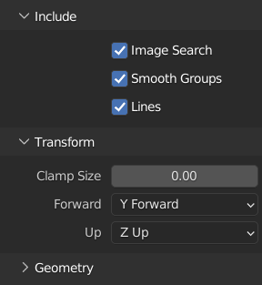
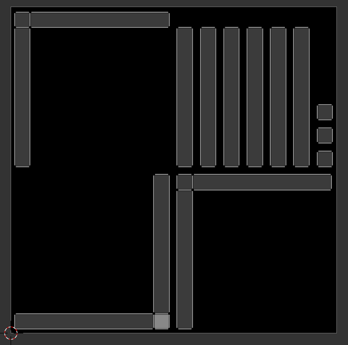

Describe your environment
There is no place like 127.0.0.1
Create a texture
We see just before that we are able to load meshes, to apply colors on them, but that complex textures are not loaded. To apply textures with Overworld (with Bullet truly speaking), we have to create a simple image texture.
The first step before applying this image to our meshes is to create the image itself. To do so, we will use Blender once again. If you use models with existing textures or if you know how to create texture even with other tools, you can skip this part. Nevertheless, with the following, you will have the basis to do texturing.
This part is maybe the more complex one of all tutorials but everything will be good, we will process step by step.
Import your model
Open Blender and as the previous time, delete every object in the current scene by pressing A to select all, then Delete to suppress all objects.
Go to File > Import > Wavefront (.obj) and navigate toward your frame mesh in the tutorial
package.
On the bottom left, you have the recent folders you used. The "models" folder of the tutorial package should be there.
Before importing the model, we have to modify the Forward axis to Y and the Up axis to Z, as we did for the export.
Once the frame is imported, it should be in the scene with its colors.
If the colors do not appear, press Z and select Material preview.
Set a UV map
To create and visualize the object UV map, we have to go to the UV Editing workspace that you
find on the top of your screen.
In this new panel, your screen is divided in two with at the right your model and at the left a grey square. It's in this second panel that we will visualize the UV map.
First of all, we have to create an image that will be our texture.
To do so, at the top of the left panel, click on + New.
In the pop-up window, change the name of the image to "frame.png". If you need to you can change the resolution to 256 x 256 px as our texture does not have many details. Bullet suggests to avoid to go over a resolution of 1024 x 1024 px to gain in performance.
On the right side, the object should be already selected, in edit mode, and with all the vertex selected. If it's not, select it, press Tab (edit mode), and then A (select).
After that, press U to unwrap and select the Smart UV project method.
A pop-up should appear.
In there, we will just put an island margin of 0.05.
Once validated, you should see a decomposition of the faces of your object in the left panel of your screen. This is what is called a UV map. This means that we have fitted the location of the faces of an object on an image. However, our image is still black so we have to put colors on it but we will not paint it by hand!
Bake the image texture
Within Blender, baking consists of generating image textures from complex materials applied to an object. Indeed, Blender uses an internal representation of textures which cannot be understood by other tools like Bullet. The only universal way to represent texture is the use of images.
The following instructions should be followed as they are so be careful!
Let's move to the Shading workspace.
On the top, you should have your object and on the bottom what are called texture nodes.
On the most right panel, go to the material the properties tab
 where we have our four colors.
Clicking on the different colors, you should see that the nodes change.
These nodes are indeed the graphical representation of each material.
where we have our four colors.
Clicking on the different colors, you should see that the nodes change.
These nodes are indeed the graphical representation of each material.
Go on the "white" material and put the focus on the node panel by clicking in it.
To add a new node press Shift+A.
In the popup use the search bar to look for Image Texture and place the node where you want.
In the Image Texture node, use the image icon on the left of the New button to select the
"frame.png" image.
Keeping the Image Texture node selected (i.e. not clicking somewhere else in the node panel), do the same for the three other colors.
Now, go to the Render Properties in the right panel and change the Render Engine to
"Cycle".
In the same panel, you can find a Bake section.
Unwrap it and change the Bake Type to "Diffuse".
In Influence, unselect the direct and indirect contributions to only keep the color one.
Finally, in Margin, change the size to 3px.
The final configuration should look like bellow.

You can now click on the Bake button!
The black image on the left should change a few seconds later to something like that:
In the image panel, you can now save the image by pressing Shift + Alt + S. Save it in the "models" folder of the tutorial package.
Apply the texture
We will now apply this texture to our object in Blender.
Go to Material Properties in the right panel and having your object selected, remove all the
materials using the - button next to the material list.
Before moving on, let's export our object using the OBJ format with the name "frame_base.obj". We will use it later.
From there, you can create a new material that you can simply name frame. At this stage, your blender should be like that.

In the node panel, we now add an Image Texture node by pressing Shift + A.
To select the image, use the Open button to locate the image we save just before.
Then, link the Color dot on the right of the Image Texture node, to the Base Color
of the Principled BSDF node.
Your object is now textured!
You can export it in OBJ and STL overwriting the previous ones named "frame.obj" and "frame.stl".